Path A — VMware & Ubuntu VM Setup
A virtual machine (VM) is a computer running inside your computer — it lets you run a different operating system (in this case, Ubuntu) than the one native to your laptop, without dual-booting. The class provides a pre-configured Ubuntu VM image with DonkeySim already installed, so this is the fastest path to get driving.
Prerequisites
- Download the VMware Player installer for your OS — check this document for additional details if needed.
- Download the Ubuntu VM image — make sure you have enough disk space (~40 GB zipped, ~50 GB unzipped).
- Minimum 8 GB system RAM on the host machine.
- If your system only has 8 GB of RAM, set the VM's allocated memory to 5120 MB (5 GB).
- If your system has at least 16 GB of RAM, increase the VM's allocated RAM to 8 GB in VM settings (the VM must not be running to change this).
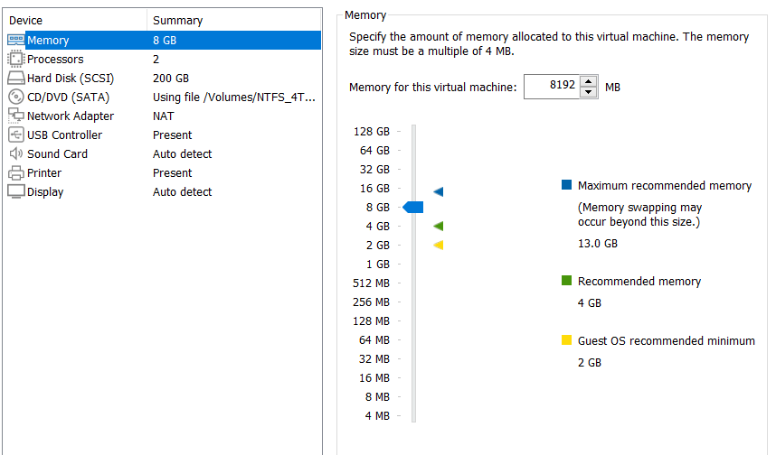
Step 1 — Install VMware Player
During the install wizard, make sure to:
- Accept the license agreement
- Install the WHP (Windows Hypervisor Platform) automatically
- Leave enhanced keyboard disabled
- Set a custom install path if desired, and choose your shortcut location
- Opt in or out of the diagnostics agreement
- Press Install
Step 2 — Load the VM Image
Open VMware Player and select Open a Virtual Machine. Select the Ubuntu image you downloaded (the file with the .vmx extension). It will appear in the list on the left — single-click it and select Edit Virtual Machine Settings to adjust memory or other settings.
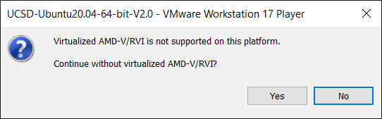
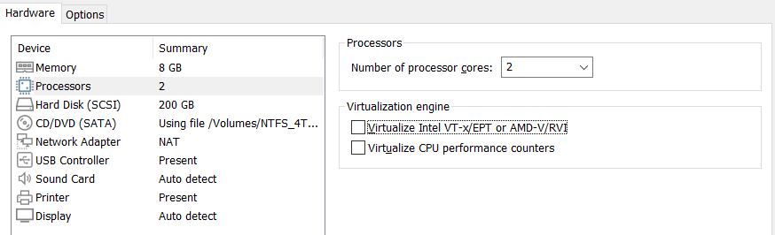
Step 3 — First Boot
Enable virtualization in your BIOS/UEFI if necessary, then start the virtual machine.
| Field | Value |
|---|---|
| User | ucsd |
| Password | UcsdStudent |
Cutting and Pasting Not Working?
If copy/paste doesn't work between the host and the VM, open a terminal inside the VM and run:
sudo apt-get autoremove open-vm-tools sudo apt-get install open-vm-tools-desktop sudo reboot now
Connecting a Game Controller
A game controller makes it much easier to drive the car in simulation to collect training data. PlayStation, Xbox, or the Logitech controller included in your kit will all work. Connect via USB cable, Bluetooth, or a USB dongle.
When you connect a controller, the VM software will ask whether the input device should be attached to the host system or the virtual machine. Choose to connect it to the VM by selecting the VM's name.
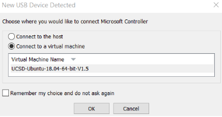
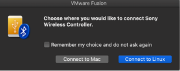
Verify the Controller Connection
The controller should be identified as js0 (or js# if multiple joysticks are connected). Run in a VM terminal:
ls /dev/input # Expected: js0 appears in the output if the controller is connected
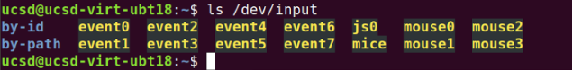
To test the joystick controls interactively:
sudo apt-get update sudo apt-get install -y jstest-gtk jstest /dev/input/js0
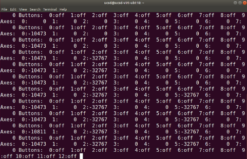
Interact with the controller and confirm the printed values change: analog inputs should move smoothly, while digital button presses should toggle cleanly between on and off.
Custom Controller Mapping
If your controller doesn't behave correctly or you need new mappings, see the DonkeyCar controller documentation (custom mapping instructions are linked at the bottom of that page), or use the built-in Joystick Wizard described in the DonkeyCar utility docs.
The wizard creates a custom controller file named my_joystick.py in your mycar folder. To enable it, set CONTROLLER_TYPE="custom" in myconfig.py. To run the wizard, from the mycar directory:
donkey createjsIf jstest is not installed, install it with sudo apt install joystick.
Path B — Native Install (Apple Silicon)
The class virtual machine will not run on ARM-based Macs (M1 and newer), but DonkeyCar/DonkeySim can be installed directly on the machine instead. This is more setup work than the VM, but runs noticeably faster and uses far less disk space. If you're on Linux or Windows and having trouble with the VM, these steps can be adapted for your platform as well.
Prerequisites
You'll need the Xcode developer tools installed:
xcode-select --install
Step 1 — Download the Simulator App
Download the DonkeySim app for Apple Silicon from the class Google Drive. If you're installing on Linux, Windows, or an Intel Mac instead, download the simulator from the gym-donkeycar releases page instead.
Step 2 — Install Miniforge / Conda
cd Downloads bash Miniforge3-MACOSX-arm64.sh
zsh, accept the suggested command.eval "$(/Users/YOUR_USER/miniforge3/bin/conda shell.zsh hook)"
(base) appear before your terminal prompt once conda is active.Step 3 — Create the DonkeyCar Environment
conda create -n donkey python=3.11 conda activate donkey pip install 'donkeycar[macos]' pip install git+https://github.com/tawnkramer/gym-donkeycar pip install tensorflow==2.15.0 pip uninstall tensorflow-metal # required — avoids a bug with exploding losses on Metal GPU accel donkey createcar --path ./d4_sim cd d4_sim
From here on, the setup instructions are the same as the VM path — continue to Section 4 — Launching DonkeySim.
Reference: docs.donkeycar.com — Simulator guide.
Launching DonkeySim
DonkeyCar is the AI framework that trains a model to drive — either the simulated car in DonkeySim, or a physical car — using computer vision and behavioral cloning.
Using the file explorer in the VM, navigate to ~/projects/DonkeySimLinux/ and execute donkey_sim.x86_64.
Launch the donkey_sim_m1.app by clicking its icon in Finder/Launchpad.
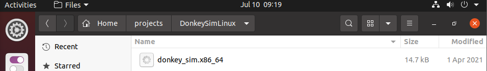
Track Names
Depending on which track you want to train on, set the corresponding environment name (used later in myconfig.py):
| Track | Environment Name |
|---|---|
| Circuit Launch | donkey-circuit-launch-track-v0 |
| Warren | donkey-warren-track-v0 |
| Mountain | donkey-mountain-track-v0 |
Configuring Your Car
Open your car's config file. On the VM this is atom myconfig.py from ~/projects/d4_sim/; on native Mac use nano myconfig.py from ~/d4_sim/.
Within myconfig.py, customize:
car_nameandracer_name- your country (under
country) - a fun fact (under
bio) - body style —
'donkey','cybertruck','car01'(default sports car), or'bare' - car color (in the
body_rgbdictionary entry)
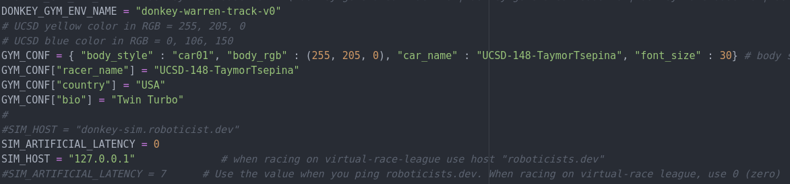
Example Config Block
Uncomment only the lines you want applied — you can paste this block directly at the top of your myconfig.py and it will take effect.
# UCSD mods to make it easier for students to use the Donkey-Sim DONKEY_GYM = True # DONKEY_SIM_PATH = "remote" DONKEY_SIM_PATH = "/home/ucsd/projects/DonkeySimLinux/donkey_sim.x86_64" DONKEY_GYM_ENV_NAME = "donkey-mountain-track-v0" # UCSD yellow color in RGB = 255, 205, 0 # UCSD blue color in RGB = 0, 106, 150 GYM_CONF = { "body_style" : "car01", "body_rgb" : (255, 205, 0), "car_name" : "UCSD-148-YourName", "font_size" : 30} GYM_CONF["racer_name"] = "UCSD-148-YourName" GYM_CONF["country"] = "USA" GYM_CONF["bio"] = "Something_about_you, ex: Made in Brazil" # SIM_HOST = "donkey-sim.roboticist.dev" SIM_ARTIFICIAL_LATENCY = 0 SIM_HOST = "127.0.0.1" # use "roboticists.dev" for virtual-race-league # SIM_ARTIFICIAL_LATENCY = 30 # set to your ping to roboticists.dev; use 0 when racing on virtual-race league # AI launch boost, used when racing AI_LAUNCH_DURATION = 3 AI_LAUNCH_THROTTLE = 1 AI_LAUNCH_KEEP_ENABLED = True # False (default) requires hitting the launch button each time; True is safest left off # JOYSTICK USE_JOYSTICK_AS_DEFAULT = False # True skips needing --js; must be False to use the web controller JOYSTICK_MAX_THROTTLE = 1.0 JOYSTICK_STEERING_SCALE = 0.8 AUTO_RECORD_ON_THROTTLE = True # records whenever throttle is nonzero JOYSTICK_DEADZONE = 0.2 AI_THROTTLE_MULT = 1.0 # scales throttle output for all model types
DONKEY_GYM_ENV_NAME) are straight quotes (") and not curly/smart quotes (“ ”) — Python will raise a syntax error on curly quotes.Get Latency from a Remote Server
Ping the remote sim host to measure round-trip latency:
ping donkey-sim.roboticist.dev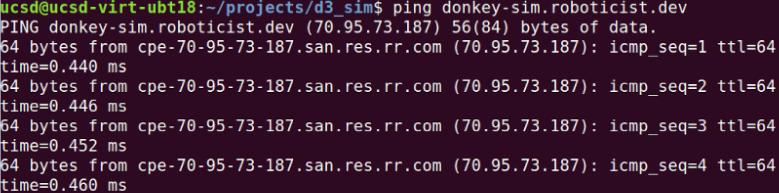
Expect roughly 20–60 ms when pinging within the US. Set SIM_ARTIFICIAL_LATENCY to the average delay you observe (e.g. SIM_ARTIFICIAL_LATENCY=30) so local testing matches real racing conditions.
Collecting Data
The DonkeyCar AI model learns via behavioral cloning — it studies recorded (image, steering, throttle) pairs from your driving and learns to reproduce your inputs. To collect this data, drive the car in the simulator.
Step 1 — Activate the Environment and Start Driving
conda activate donkey cd ~/projects/d4_sim python manage.py drive
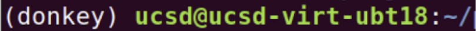
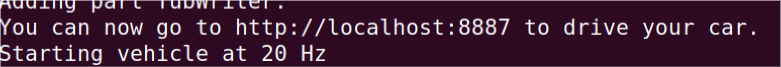
Open a browser and go to http://localhost:8887.
Driving with Mouse and Keyboard
From the web page above, control the car with a virtual joystick in the browser.
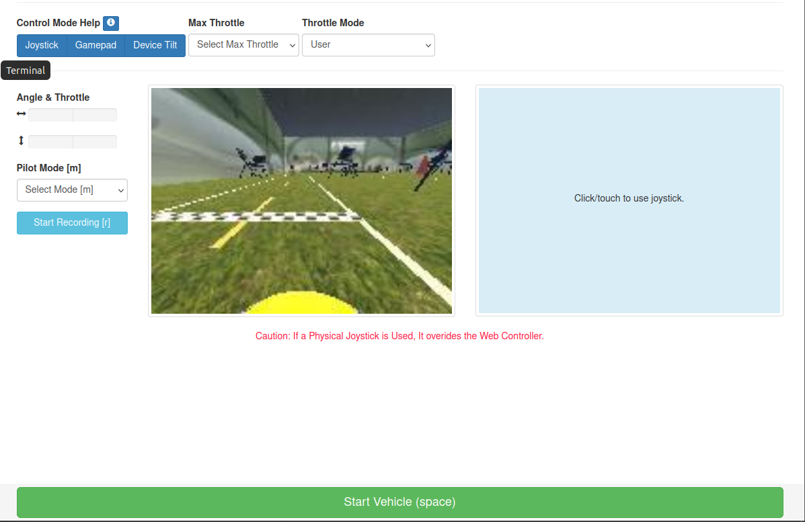
CTRL + C in the terminal to stop the DonkeyCar framework.Driving with a Gamepad
To use a physical joystick instead of the browser, edit this section in myconfig.py — uncomment the lines and set values as needed:
USE_JOYSTICK_AS_DEFAULT = True JOYSTICK_MAX_THROTTLE = 1 JOYSTICK_STEERING_SCALE = 1 AUTO_RECORD_ON_THROTTLE = True CONTROLLER_TYPE = 'ps4' # ps3 | ps4 | xbox | pigpio_rc | nimbus | wiiu | F710 | rc3 | MM1 | custom USE_NETWORKED_JS = False NETWORK_JS_SERVER_IP = None JOYSTICK_DEADZONE = 0.01
Set CONTROLLER_TYPE to match your controller. Useful face-button functions typically include: deleting the last 100 data points (@20Hz = 5s of data), an emergency stop, and switching operation mode (user control ↔ AI model). Otherwise, watch the terminal output to determine each button's function as you press it.
Deleting Bad Training Data
Data is stored in ~/projects/d4_sim/data. You can wipe it and start fresh if a session went badly.
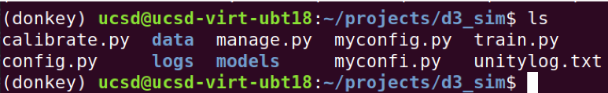
rm -rf data once it succeeds. Double-check you're in the d4_sim directory before running it.rm -rf data mkdir data
Training & Testing
Using the recorded data in the data folder, train a model and give it a descriptive name (e.g. 8july24_sim_160x120_20_1.h5):
python train.py --model=models/YOUR_MODEL_NAME.h5 --type=linear --tubs=data/
To test the trained model:
python manage.py drive --model=models/YOUR_MODEL_NAME.h5 --type=linear
Enable the model by pressing the "change operation mode" button twice — the terminal should confirm the car is in AI mode.
AUTO_RECORD_ON_THROTTLE = False in myconfig.py to record only while manually pressing the record button, which the terminal will confirm along with the running sample count.Transfer Learning from a Previous Model
If you collect more data after training, you can train a new model using all the data (old and new — give it a new name):
python train.py --tub ~/projects/d4_sim/data/TUB_NAME --transfer=models/PREVIOUS_MODEL.h5 --model=models/NEW_MODEL.h5
Tubs are subsections of the data folder used to separate training data. Omit a tub name to use everything in data/.
UCSD GPU Cluster Training
You will work across two terminals: a Local Session to interact with the VM/native machine, and a Remote Session ssh'd into the GPU cluster.
Step 1 — SSH into the Cluster (Remote Session)
ssh <username>@dsmlp-login.ucsd.edu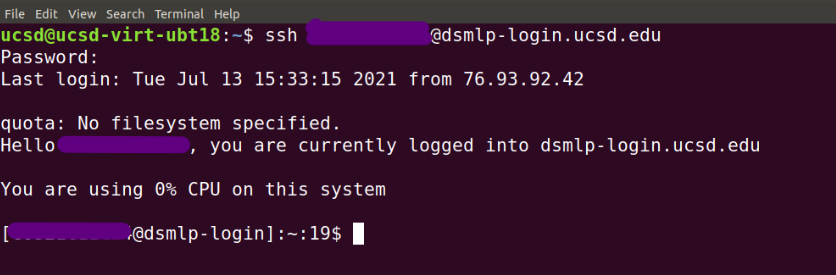
Step 2 — Launch a Container
You have access to two container types — a CPU-only container for transferring data, and a GPU container for training. Only use the GPU container for actual training.
| Purpose | Spec | Command |
|---|---|---|
| Transfer data | 2 CPU, 4 GB RAM | launch-scipy-ml.sh -i ucsdets/donkeycar-notebook:latest |
| Train models | 8 CPU, 1 GPU, 32 GB RAM | launch-scipy-ml.sh -g 1 -m 32 -i ucsdets/donkeycar-notebook:latest |
Add the flag -v 2080ti for faster performance, or specify another GPU type (e.g. a5000) if 2080ti units are busy. Check datahub.ucsd.edu/hub/status for current GPU availability. Only run one container at a time.
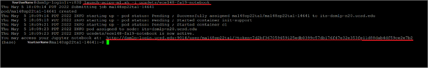
Step 3 — Exit and Verify Pod Cleanup
exitConfirm the pod was deleted:
kubectl get pods # Expected: "No resources found"
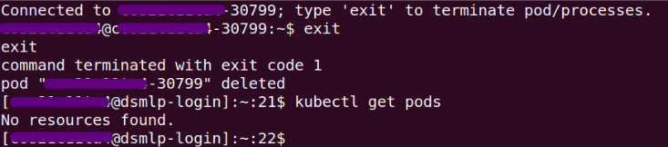
If a pod remains, delete it manually:
kubectl delete pod <POD_NAME>Step 4 — Prepare DonkeyCar on the Remote Session
The donkey virtual environment should auto-activate; if not:
conda activate donkey # if "donkey" is not found: conda init # then relogin to the remote session and retry conda activate
mkdir ~/projects cd ~/projects donkey createcar --path d4_sim cd d4_sim
Step 5 — Transfer Config and Data (Local → Remote)
rsync -avr -e ssh myconfig.py <user_name>@dsmlp-login.ucsd.edu:projects/d4_sim/ rsync -avr -e ssh data/<tub_name> <user_name>@dsmlp-login.ucsd.edu:projects/d4_sim/data/
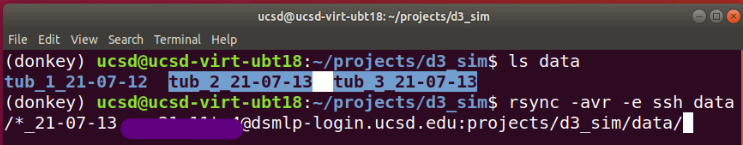
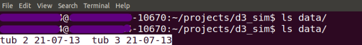
rsync only copies the differences between source and destination directories, so the first transfer copies the full folder while later transfers are incremental. Once transfer completes, close the CPU pod (verify it's closed) and open a GPU pod to train.
Step 6 — Train on the Cluster
python train.py --model=models/yourmodelname.h5 --type=linear --tubs=data/ # multiple tubs — comma-separated, no spaces python train.py --tub=data/tub1,data/tub2 --model=models/MODEL_NAME.h5 --type=linear # transfer learning from a prior model python train.py --tub=data/tub1 --model=models/NEW_MODEL_NAME.h5 --transfer=models/OLD_MODEL_NAME.h5
imgaug being unavailable, run pip install imgaug.Once training completes, close the GPU pod (verify closure) and open a CPU pod to transfer results back.
Step 7 — Transfer Model Back (Remote → Local)
rsync -avr -e ssh <user_name>@dsmlp-login.ucsd.edu:projects/d4_sim/models/<model_file> models/
You can now test the model locally, exactly as in Section 7.
Remote Simulator Racing
The simulator you launched locally (from ~/projects/DonkeySimLinux/, running donkey_sim.x86_64) can instead run on a remote server: donkey-sim.roboticist.dev.
Connect by changing the simulator host in myconfig.py:
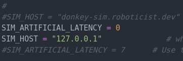
SIM_HOST = "donkey-sim.roboticist.dev" SIM_ARTIFICIAL_LATENCY = 0
Watching Your Car
Since the simulator now runs on a remote server, you can watch your car on the live stream:
Your car should appear on stream shortly after you start it, assuming the host is configured correctly.
UCSD Jacobs School of Engineering — ECE/MAE 148 Intro to Autonomous Vehicles